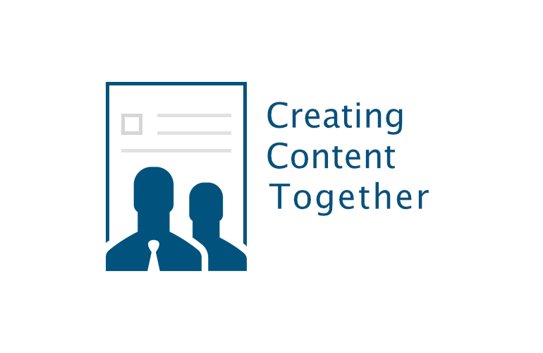
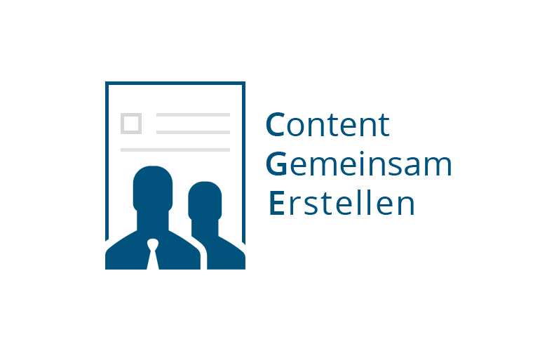

These days are tough and challenging for all of us. COVID-19 affects everyone across the globe. The Coronavirus hits every country differently. Fortunately, Germany seems to be better prepared than other countries. However, there will be a huge fallout from this crisis and many things will not be the same as they were for a while. So, please #stayathome and stay safe.
But let me tell you a small success story around Plone and COVID-19.
We are running the portal Onkopedia (www.onkopedia.com) for over a decade where the medical guidelines for oncology and hematology for Germany, Austria and Switzerland are published. The portal contains treatment guidelines for over 60 diseases which also includes medical studies, protocols, certifications and information about individuals drugs and active components. With the growing Corona crisis in Europe, high-risk patients with pre-existing conditions like cancer came into the focus. There was an urgent need for providing COVID-19 specific information for most diseases to the public.
The Onkopedia portal was always running and powered by Plone (nowadays running on Plone 5.2, Python 3). Within two or three days we had to extend our data model for COVID-19 in order to provide the functionality required to publish the COVID-19 information specific for each disease. With the help of the whole Onkopedia development team, we were able to to roll out the necessary Onkopedia update within a very short time from of three days. The required changes affected the Plone data model for the guidelines and a bunch of UI aspects like a new COVID-19 section and individual markers in guideline documents for referencing the related COVID-19 information in the COVID-19 master guideline.
As a result, we managed to roll out the new COVID-19 section on onkopedia.com (German only) yesterday with individual COVID-19 content for over 40 different diseases.
Key success factors: Plone and a great team (Abstract Technology, Practice Innovation, AppWeeve)
Thank you all for making this happen and for contributing in the fight with COVID-19.
Released is released
Should you be allowed to remove your own packages from PyPI or any other public package repository? Short answer: NO!!!
Plone/Zope/ZEO depends on a module trollius that suddenly disappeared from PyPI this week. The maintainer decided to remove the package because he does not want to maintain the package anymore. As a result it was impossible to build a Plone installation properly because of the missing dependency.
Core question: should you be allowed to remove our own package from a public repository (independent of the eco system)?
First: every package maintainer is of course allowed to remove its own deprecated packages, giving up maintenance for whatever reason.
Second: if you upload your code and package to a public repository like PyPI then you invite people for using it. Your package is likely to become a dependency somewhere in the (Python) ecosystem.
Should you be allowed to remove your own package from a public repository?
NO!!!
NEVER EVER!!!
Removing a package will break dependencies, it will cause trouble independent of the importance of the package (read what happened in the NodeJS world).
Removing a package from a public place should only be allowed for legal reasons or when the package contains malware or something similar. Giving up the maintenance of package is not a legitimate reason.
If you as a maintainer don't want to be bothered anymore by your own historic projects then:
- close your issue tracker
- setup an email rule than ignores all related emails based on the project name, its URL or whatever
This is very easy to accomplish and does not make much time. As maintainer and contributor to 145 Python packages listed on PyPI, I receive very few emails per year for old packages that I do no longer maintain.
The original maintainer of the "trollius" module did not things right with planning the deprecation etc. as you can read here within the related issue of Zope Foundation. However, removing a released package completely from PyPI was a major mistake, and he should have known better. I raised the question if Redhat (the author is a Redhat employee) would remove outdated or unmaintained packages from older Redhat distros. No answer.
If you release something to the public - in this case to the global Python repository - then this should be considered as a non-revocable gift to the public.
If you don't accept this then please don't release your code/packages to the public and keep it for yourself or place it on your own server.
A comment like " I don't see why I would owe anything to the community" is not acceptable - in particular not by Python core developer who should really know better.
Released is released!!!
Medical guideline portal Onkopedia.com relaunched - on top of Plone 5.2 and Python 3.7
In the third major iteration of the Onkopedia project, ZOPYX and partners relaunched the complete onkopedia.com portal with a new fully responsive layout and an updated Plone backend based on the latest Plone 5.2 version and finally Python 3.7 under the hood.
Project history
The Deutsche Gesellschaft für Hämatologie und medizinische Onkologie (DGHO) e.V., known in English as the German Society for Haematology and Medical Oncology, is a medical association whose goals include the training and education of doctors and medical personnel and the drafting and publication of medical guidelines. Its members include scientists and doctors specializing in the research, diagnosis and treatment of blood diseases and malignant tumors.
Together with other medical societies and associations from Germany, Austria and Switzerland, the DGHO operates the online guidelines portal “Onkopedia”. In addition to providing medical guide- lines, it serves a source of important specialist information for patients and carers.
The guidelines portal was developed by Andreas Jung and ZOPYX on behalf of the DGHO in 2010. It is based on the Produce & Publish authoring environment from ZOPYX and the open source content management system Plone.
The guidelines portal revolutionized the work of the DGHO. In structuring and accelerating the editorial workflow, it has helped to ensure that doctors, patients and carers can obtain quick, easy, any-time access to the latest guidelines and information. Thanks to the portal, the DGHO has been able to intensify the exchange of specialist expertise and to provide clinical practitioners with an indispensable tool for quality assurance.
The doctors and scientists responsible for formulating the medical guidelines were not required to change their way of working. They continue to write the guidelines using Microsoft Word. A DGHO employee then checks the documents for technical suitability and feeds them into the CMS, where they are converted to HTML and - for printing purposes - to PDF.
Project goals
-
Migration of onkopedia.com from Plone 4.3 to Plone 5.2
-
Port of underlaying XML-Director infrastructure to Plone 5.2 and Python 3.6/3.7
-
Port of Produce & Publishing stack to Plone 5.2 and Python 3.6/3.7
-
Resign and reimplementation of the Onkopedia look & feel
-
Full responsiveness
-
All content available across all mobile devices
Screenshots


Project summary
The migration to Plone 5.2 and Python 3 was a large step. Plone 5.2 on top of Python 3 was first demonstrated at the Plone conference 2018 in Tokyo and it was clear that we wanted to go directly to a Python 3 directly rather to migrate to Plone 5.2 on top of Python 2.7 first. In the first phase we had to upgrade the complete XML Director and Produce & Publish stack which is the foundation of our XML based publishing solutions for many years. Fortunately the implementation of most modules have a good design and porting them to Python 3 was more about changing imports than doing any reimplementation work. The standard migration problems were related to encoding and IO issues - things which are handled different in Python 2 and Python 3. We intentionally dropped support for Python 2 rather than making the code base compatible with Python 2 and 3. Python 2 is dead and it does not make sense for our own business cases to support Python2 in the future.
Porting the onkopedia.com itself to Plone 5.2 and Python 3 was almost pretty easy since it was already based on Dexterity.
Some efforts went into the implementation of xmldirector.connector as an updated version of xmldirector.plonecore. xmldirector.connector is now based on Python 3 and based on PyFilesystem 2 and therefore ready for future challenges.
The responsive frontend is a complete redesign and was implemented using Diazo and Bootstrap.
The content migration was implemented on the Plone side using our own migration process with is basically a full export/full import solution over plone.restapi which was developed over the last years as part of other Plone migration projects for our own customers. Onkopedia used to use the XML database eXistDB for storing all the XML related content. For technical reasons we abandoned eXistDB and moved over to a filesystem based storage. This change was painless because the onkopedia.com application and the underlaying XML-Director implementation allowed us to abstract the storage layer and basically change the storage location by just switching the storage URL - no further code changes necessary! In the mid-future we plan to use FusionDB as storage layer for XML-based publishing solutions. FusionDB is based on the ideas and partly on the code base of eXistDB but with a modern storage layer based on RocksDB.
The Onkopedia contents is also available through the Onkopedia Apps ((iOS, Android). The apps are backed by the original Onkopedia content. For technical reasons we export the Onkopedia content several times a day and make them available to the apps over a small REST API. The Onkopedia apps allow the users to access the content offline which is needed e.g. in hospitals which thick walls, underground offices with limited or no network connectivity.
References
-
Complete list of reference related to Produce & Publish and XML-Director
-
Onkopedia Case study - XML-based publishing with Plone, Exist-DB and XML-Director
-
Onkopedia Case study - XML-based publishing with Plone, Exist-DB and XML-Director (German)
Project partners
-
-
backend
-
requirements engineering
-
project management
-
-
-
frontend design and implementation
-
-
-
Onkopedia App
-
-
-
XML workflows and DOCX conversion
-
-
-
Hosting and administration
-
Auch bei Vodafone sind nur Sicherheitsdilletanten am Werk
Offenbar hat auch bei großen Konzernen niemand Ahnung von Security oder man ist ignorant. Wieviele Datenlecks, wieviele Hacks müssen noch passieren bis man wach und sensitiv wird?
Gestern eine Begegung der dritten Art im lokalen Vodafone Shop in Tübingen.
Ich ging in den Laden wegen einer Vertragsfrage. Mein Kundenpasswort hatte ich vergessen, welches zum Zugriff auf meine Vertragsdaten durch den Shop Mitarbeiter notwendig gewesen wäre. Unter Angabe meiner Mobilfunknummer, des Geburtsdatums und der IBAN des hinterlegten Kontos konnte der Mitarbeiter dann mein Kundenkennwort im KLARTEXT auslesen und damit auf meinen Vertragsdatensatz zu greifen.
In 2018 sollte jeder IT Firma von der kleinen Programmierklitsche bis zu einem großen Konzert wie Vodafone klar sein wie man mit sensitiven Daten umgeht. Die Nachrichten über Passwortklau, Datenlecks, Hacks etc. gehen ja mittlerweile fast schon täglich durch die Presse. Und was macht Vodafone: speichert weiterhin Passwörter im KLARTEXT. Diese Vorgehensweise ist einfach grob fahrlässig, unprofessionell und inakzeptabel.
Zum Mitschreiben:
PASSWÖRTER WERDEN NIE IM KLARTEXT GESPEICHERT!!!
PASSWÖRTER MÜSSEN IMMER MIT EINEM AKTUELLEN HASHING ALGORITHMUS GEHASHED GESPEICHERT WERDEN!!!!
Mal gespannt, ob und wie Vodafone reagiert.
The Guillotina project (Python AsyncIO REST API Framework) is an example for a horrible and tasteless project name.
Why?
- a guillotina was used by the Nazi regime to kill thousands of resistance fighters during 1939-1945. This includes the resistence group "Weise Rose". There leaders - Hans and Sophie Scholl - were murded and killed with a guillotina (among various others)
- beheading was one of the cruel killing and terror methods by ISIS over the last years
- beheading is still the primary death penalty method in "modern" Saudi Arabia
The history of the Guillotina dates back to the French revolution in the 1789 and of course more than two centuries have passed. However there is no to place for joking about a method for kiling people that is still in use until today.
The "joke" of naming the project "Guillotina" is that is represents an implementation of a "headless" CMS...you got the point...they wanted to be funny but in the end the choice of the project name is horrible and tasteless.

In our current customer project we have some fancy requirements for content-types:
- large set of metadata per content-type (100-120 fields)
- metadata grouped by fieldsets
- metadata grouped inside a fieldset (all fields are grouped in two level deep hierachy)
- client-side validation
- configurable field visibility per-instance (each editor can turn the visibility of a field to public or internal in addition to the standard visibility of content objects based on their workflow state and the current security context)
- custom formatting of numbers or texts
After some evaluation we came to the conclusion that working with Dexterity and Dexterity schemas would not work for us. In particular there is no straight forward way for grouping fields in a DX schema in a two level hierarchy.
We came to Vue Form Generator which allows us to implement the requirements in a pretty straight forward way. VFG is based on VueJS - yet another Javascript framework for building rich client-side user interfaces.
My reasons for using VueJS over ReactJS or Angular:
- easy approachable
- no verbose code needed
- everything is brought to the point
- no steep learning curve
- easily extensible
- it fits my brain
Vue Form Generator allows us to implement forms as web compontents. All forms are defined using JSON (example). In addition to the field properties used by VFG, you can add additional application specific properties. A JSON field schema definition acts as a single point of configuration both for all edit forms and all view forms (similiar to Dexterity). The screenshot shows an auto-generated contact form with various address groups.
We use minimal Dexterity based content-types for storing the form data inside an annotation. The schemas of the content-types only define the standard Dublin Core metadata. The form data is being send from the client using an AJAX post operation to Plone. On the server we perform minimal validation like type checking and take the standard security precautions.
Vue Form Generator also support some non-standard field types that go beyond the standard HTML input fields.
Lessons learned:
- it is easy to integrate VueJS and Vue Form Generator with Plone
- using JSON to define and manage form definitions is easy
- no restart needed for changed form definitions
- no support (at this time) for uploads (images, files)
- small code base
- no intended as a replacement for Dexterity but a straight forward solution for building more fancy user interfaces with a Dexterity backend
Einladung zur Brownbag-Session "Smarte Content Erstellung mit SMASHDOCs und smarte Publishinglösungen" am 21.6.2017 in Berlin
Am 21. Juni 2017 findet bei Abstract-Technology in der Krausenstraße 8, 10117 Berlin, eine Brownbag-Session zu kollaborativem Editing, Reviewing and Sharing von Dokumenten für kleine und große Organisationen statt. Mit der Brownbag-Session startet Abstract-Technology eine Reihe von Veranstaltungsserien, auf der regelmäßig Expertinnen und Experten aus Firmen über aktuelle Systeme und Entwicklungen referieren.
AGENDA
9.00 Uhr Begrüßung, Coffee and Breakfast in den Räumen der Abstract Technology GmbH
THEMEN:
- „Content creation für E-Learning-Projekte effizient erstellen und steuern“, Stefania Trabucchi
- „Einführung und Demonstration von SMASHDOCs“, Christian Gericke
- „content-gemeinsam-erstellen.de - Integration von SMASHDOCs in das CMS Plone 5“, Andreas Jung
- „Schlanke XML-basierte Publishing Workflows am Beispiel Onkopedia“, Markus Wiedenmaier
- 12.00 Uhr Diskussion und Fragen und anschließende Verabschiedung
WICHTIGES ÜBER SMASHDOCS AUF EINEN BLICK
SMASHDOCs ist kein herkömmliches Textverarbeitungsprogramm wie Microsoft Word oder Google Docs, sondern ein intelligentes Web-Dokument. Und so funktioniert es: Alle Beteiligten arbeiten online an ein und demselben Dokument. Dabei speichert SMASHDOCs automatisch alle Änderungen und hebt neue Änderungen für Dich hervor. Wenn der Inhalt fertig ist, produziert SMASHDOCs mit einem Klick ein fertig designtes Dokument.
VORTEILE VON SMASHDOCS GEGENÜBER ANDEREN TEXTEDITOREN
- Automatische Versionskontrolle: Das Dokument merkt sich automatisch jede Änderung – ob in Textabschnitten, Bildern oder Tabellen. Mit nur einem Klick ist einsehbar, wer wann welche Änderungen und Kommentierungen an einem Abschnitt vorgenommen hat.
- Benachrichtigungen über alle Änderungen: Sobald es in den Dokumenten neue Änderungen gibt, benachrichtigt SMASHDOCs automatisch per Mail.
- Alle Änderungen auf einen Blick: SMASHDOCs weiß, welche Änderungen und Kommentare noch nicht gesehen wurden und hebt diese hervor, sodass diese sofort erkennbar sind.
- Kontrolle über vertrauliche Kommunikation: Für jeden Kommentar ist einstellbar, wer ihn sehen darf( alle, nur bestimmte Personen).
- Perfektes Design auf Knopfdruck: Den Inhalt des Dokuments kann in jedes beliebige Format (z. B. MS Word, HTML, PDF, XML, IDD) und in jeder gewünschten Datenstruktur exportiert werden. So erhält man mit nur einem Klick ein perfekt designtes Endprodukt.
- Maximale Datensicherheit:
- Gleichzeitiges bearbeiten: Mit anderen gleichzeitig an einem Dokument arbeiten.
- Professionelles-Rollen-Rechte-Management: Wer in einem Dokument was tun und sehen darf kann auch geregelt werden. Die Einstellungen können auch für einzelne Abschnitte angepasst werden.
- Word-Import möglich: Der Content wurde bereits in Word erstellt? Kein Problem. Word-Dokumente können einfach importiert werden.
- Individuell erweiterbar für spezielle Formatierungsmöglichkeiten, Schnittstellen von oder zu einem CMS oder für spezielle Ausgabeformate
- Perfekt integrierbar: Das Integrieren von SMASHDOCs mit unserer API in andere Web-Anwendungen, z. B. als neuen Dokumententyp oder kollaborativen Editor ist nun auch möglich.
- Viele einzigartige Funktionen: SMASHDOCs kann dank der eingebauten Intelligenz viel mehr als herkömmliche Textverarbeitungsprogramme

GEMEINSAM DOKUMENTE ERSTELLEN, ÜBERARBEITEN UND PRODUZIEREN
Täglich sind wir mit der Aufgabe konfrontiert, unsere Dokumente mit Kollegen, Kunden, Autoren, Partnern usw. zu bearbeiten oder zu teilen. Dass einen Dokumentenaustausch über E-Mail keine Lösung ist, wissen wir bereits. Welche sichere und intelligente kollaborative Lösungen zu Content-Erstellung gibt es sonst noch und welche Vorteile bringen neue Systeme mit? Genau zu diesem Thema wollen wir mit Ihnen während einer Brownbag-Session diskutieren.
Diese erste Brownbag-Session bietet die Möglichkeit in einer ungezwungenen Atmosphäre den kollaborativen Editor SMASHDOCs kennenzulernen, mit dem Sie gemeinsam an der Content-Erstellung innerhalb ihrer Organisation arbeiten können. Jeder Benutzer hat zu jeder Zeit eine individuelle Sicht auf das zu bearbeitende Dokument und dessen Änderungen seit der letzten Bearbeitung. SMASHDOCs ist entweder in der Cloud oder innerhalb der eigenen IT Infrastruktur nutzbar.
Die einzigartige Architektur von SMASHDOCs erlaubt die Integration der Editor-Funktionalität für jede beliebige Web-Applikation und ist damit effektiv innerhalb ihrer Organisation nutzbar. Wir zeigen wie Arbeitsgruppen bei der Pflege ihrer Inhalte mit Hilfe von SMASHDOCs unterstützt werden können.
Anhand des medizinischen Leitlinienportal „Onkopedia“ zeigen wir Ihnen wie auch nicht-technische Autoren professionelle XML-basierte Publikationen erstellen können, ohne mit der Komplexität der darunterliegenden Publikationstechnologie konfrontiert zu werden.
PARTNERS
 |
 |
Weitere Informationen zur Anmeldung finden Sie hier.
Creating Content Together - Collaborative CMS solutions
Outline of our strategy for collaborative CMS solutions for 2017
Earlier this year we started with the integration of the collaborative editor SMASHDOCs in Plone 5.
Our goal for 2017 is to provide integrations of SMASHDOCs for all major CMS implementations like Drupal, Joomla, Typo3, Wordpress and others.
The technical foundation of all CMS specific implementations are language specific wrappers of the SMASHDOCs webservice API.
At the moment we provide wrappers for the following languages:
- Python 2.7, Python 3.3+ (working, tested)
- Javascript/NodeJS (working, tested)
- PHP 7.X (working, tested)
- C# (work in progress)
All wrappers will be provided for free under the GNU Public License V2 (GPL2). All wrapper share basically the same common API which is fully documented for Python.
On top of the language specific SMASHDOCs wrappers we will provide CMS specific implementations like the one for Plone (screencast).
A prototype integration of SMASHDOCs with Drupal is currently in the making (screencast).
The name of this new project is Creating Content Together. Besides the SMASHDOCs integration we will optionally provide extended publishing capabilities based on our decade-long experience with project based on the Produce & Publish stack and our XML-Director CMS solution.
 www.creating-content-together.info
 www.content-gemeinsam-erstellen.de
Further informations about roadmap, functionality and pricing can be found on the websites above. Both sites will be relaunched within the next week. Also the English website will see a native translation (currently automatically translated using Google Translate).
Contact
Andreas Jung
info@zopyx.com

{kind=link}
{kind=link}
{kind=link}
{kind=link}
Integration of Plone 5 with SMASHDOCS
SMASHDOCS is a web-based collaborative editor solution that we integrated with Plone 5...and the good thing: Smashdocs is available for free for NGOs.
We are proud to present the integration of SMASHDOCS - "a web-based intelligent word processing platform" - with Plone 5.
Smashdocs allows you to work as a group of editors or commentators on documents. #
Smashdocs supports
- the standard editor functionality in combination with change tracking
- review of changes,
- commenting,
- approval or rejection of changes.
Smashdocs can be compared to Google Docs but it works completely different and it is much smarter about versioning, collaboration features and approving or rejecting changes.
Smashdocs supports (similar to Plone) a role-based access model:
- Reader
- Commentator
- Editor
- Approver
Existing DOCX content can be imported into Smashdocs through Plone. Smashdocs can generate various output formats like DOCX, PDF, EPub, HTML - formatted in the layout and look & feel of your corporate identity. A later version of our integration will be able to pull these formats automatically from Smashdocs and store them directly in Plone. So your documents can be made available for download (DOCX or PDF) and also published directly within the Plone CMS - within the same look and feel as your Plone 5 website.
Smashdocs offers various hosting options (public cloud, private cloud, self-hosted) - see the Smashdocs pricing options.
The integration of Smashdocs with Plone 5 is work-in-progress and is available as open-source here.
Smashdocs is available for free for elegible NGOs - please check the Smashdocs announcement.
You can test Plone 5 and Smashdocs on our Plone demo site www.plone-demo.info.
Contact
Andreas Jung/ZOPYX
info@zopyx.com
P +49 7071 793376